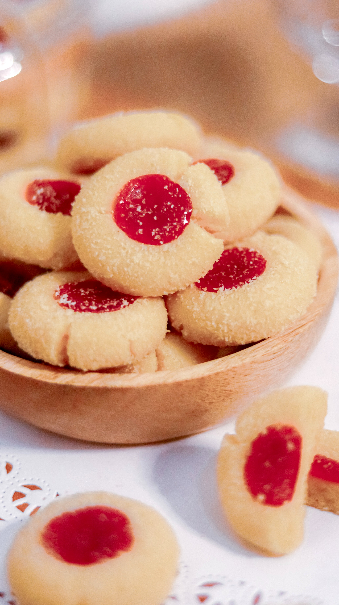

Hallongrottor

Description
Indulge in the delightful flavors of Swedish baking with this classic Hallongrottor recipe!
"Hallongrottor," translating to "raspberry caves," captures the essence of traditional Swedish cookies that are as charming as they are delicious.
These crumbly wonders, made with a simple yet rich buttery dough, encase a sweet surprise-vibrant raspberry jam. The name itself evokes the cozy
warmth of a fika, beckoning you to take a moment to savor the perfect balance of buttery goodness and fruity sweetness in every bite.
Join us on a culinary journey as we guide you through the steps to create these iconic treats, bringing a taste of Swedish tradition to your home kitchen.
Feel free to experiment with different types of jam or preserves to add variety to your Hallongrottor cookies. Enjoy baking!
Ingredients
- Flour: 300g
- Softened butter: 200g
- Sugar: 100g
- Vanilla extract: 10mL
- Baking powder: 5mL
- Salt:0.3g
- Raspberry jam
Steps
- Preheat the oven:
Preheat the oven to 200C. Line baking sheets with parchment paper.
- Prepare the dough:
In a large mixing bowl, cream together the softened butter, sugar and vanilla extract until ligth and fluffy.
- Combine dry ingredients:
In a spearate bowl, whisk together the flour, baking powder and salt.
- Combine wet and dry ingredients:
Gradually add the dry ingredients to the wet ingredients, mixing until a soft dough forms.
Be careful not to overmix.
- Form the cookies:
Take small portions of the dough and roll them into balls, between 2cm and 3cm in diameter.
Place the balls on the prepared baking sheets, leaving space between each.
- Make indentations:
Use your thumb or the back of a small spoon to make an indentation in the center of each dough ball.
Make sure not to go all the way through.
- Fill with jam:
Spoon a small amount of raspberry jam into each indentation. You can use a variety of fruit jams depending on your preference.
- Bake:
Bake in the preheated oven for approximately 12-15 minutes or until the edges are lightly golden. Keep an eye on them to prevent over-baking.
- Cool:
Allow the cookies to cool on the baking sheets for a few minutes before transferring them to a wire rack to cool completely.